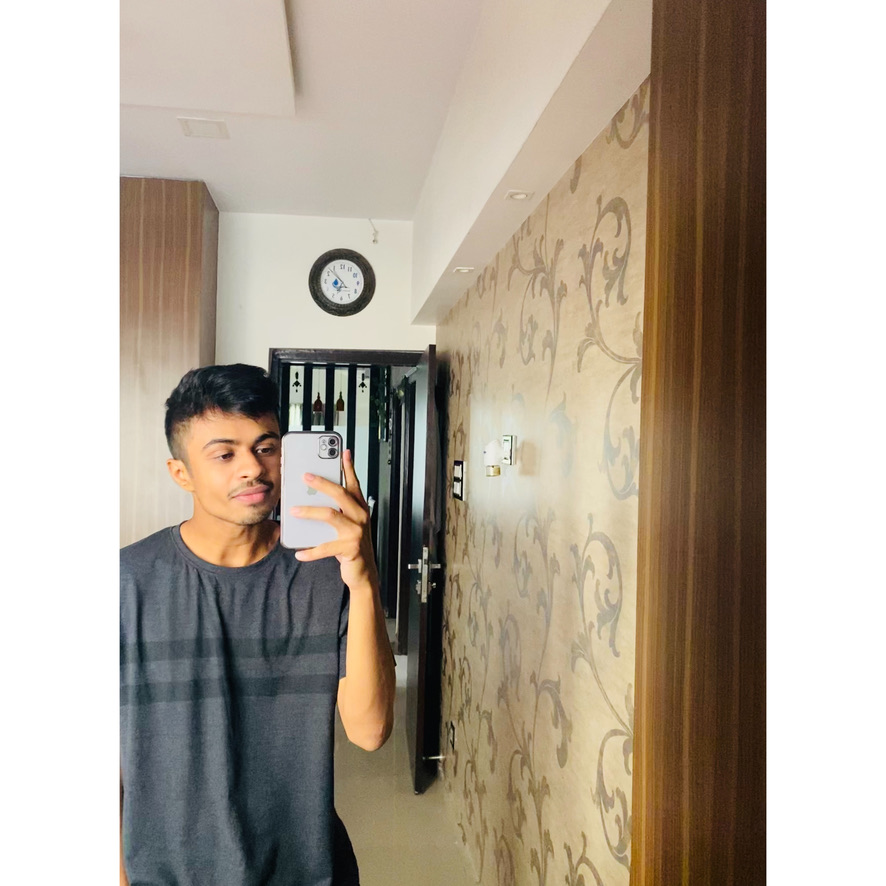

About Me
Hey myself Hemil I'm from Surat, Gujarat, India. I was born on 18th October 2003. In India I completed my 12th grade. Right now my course is Interactive media design in Algonquin College, Ottawa. While schooling I developed my interest in some sports like Football, Cricket, Volleyball, Speedball. I'm a national Speedball player by the way.
Besides that I love Travelling. I never missed any school trip. The trip in which we had been at Igatpuri I enjoyed a lot. It was my last trip with my school friends. About my family I have an elder sibling who's a singer. My dad is a pharmasist and mom is house wife. About me I want to become a professional coder and graphics designer. By passion I'd love be a cosmologist. I even do research sometimes about Space science.
If you want to lift yourself up, lift someone else up. - Booker T. Washington
My Hobbies
- Swimming
- Stargazing
- Volleyball